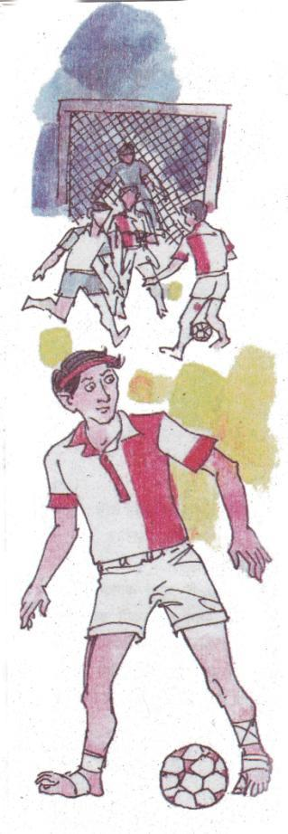

ফুটবল খেলোয়াড়
জসীম উদ্দীন
আমাদের মেসে ইমদাদ হক ফুটবল খেলোয়াড়
হাতে পায়ে মুখে শত আঘাতের ক্ষতে খ্যাতি লেখা তার।
সন্ধ্যাবেলায় দেখিবে তাহারে পটি বাঁধি পায়ে হাতে,
মালিশ মাখিছে প্রতি গিঁটে গিঁটে কাত হয়ে বিছানাতে।
মেসের চাকর হয় লবেজান সেঁক দিতে ভাঙা হাড়ে,
সারা রাত শুধু ছটফট করে কেঁদে কেঁদে ডাক ছাড়ে।
আমরা তো ভাবি ছ-মাসের তরে পঙ্গু সে হলো হায়,
ফুটবল-টিমে বল লয়ে কভু দেখিতে পাব না তায়।
প্রভাত বেলায় খবর লইতে ছুটে যাই তার ঘরে,
বিছানা তাহার শূন্য পড়িয়া ভাঙা খাটিয়ার পরে।
টেবিলের পরে ছোট বড় যত মালিশের শিশিগুলি,
উপহাস যেন করিতেছে মোরে ছিপি-পরা দাঁত তুলি।
সন্ধ্যাবেলায় খেলার মাঠেতে চেয়ে দেখি বিস্ময়ে,
মোদের মেসের ইমদাদ হক আগে ছুটে বল লয়ে।
বাম পায়ে বল ড্রিবলিং করে ডান পায়ে মারে ঠেলা,
ভাঙা কয়খানা হাতে পায়ে তার বজ্র করিছে খেলা।
চালাও চালাও আরো আগে যাও বাতাসের মতো ধাও,
মারো জোরে মারো-গোলের ভিতরে বলেরে ছুঁড়িয়া দাও।
গোল-গোল-গোল চারিদিক হতে ওঠে কোলাহলকল,
জীবনের পণ, মরণের পণ, সব বাধা পায়ে দল।
গোল-গোল-গোল মোদের মেসের ইমদাদ হক কাজি,
ভাঙা দুটি পায়ে জয়ের ভাগ্য লুটিয়া আনিল আজি।
দর্শকদল ফিরিয়া চলিছে মহা-কলরব করে,
ইমদাদ হক খোঁড়াতে খোঁড়াতে আসে যে মেসের ঘরে।
মেসের চাকর হয়রান হয় পায়েতে মালিশ মাখি,
বেঘুম রাত্র কেটে যায় তার চিৎকার করি ডাকি।
সকালে সকলে দৈনিক খুলি মহা-আনন্দে পড়ে,
ইমদাদ হক কাল যা খেলেছে কমই তা নজরে পড়ে।

অনুশীলনী
১. কবিতাটি মূলভাব জেনে নিই।
জাত খেলোয়াড় ইমদাদ হক। খেলা এবং খেলায় জেতাই তার জীবনের একমাত্র লক্ষ্য। নিজের অবস্থা যেমনই হোক না কেন খেলা- পাগল সে, খেলবেই। খেলতে গিয়ে ইমদাদ কত শত আঘাত পায়। তবু সেসব কষ্টকে পরোয়া না করে সে খেলে এবং তার জন্যই খেলায় জিত আসে। তার জন্যই সকল দর্শক খেলার আনন্দ পায়। এই কবিতায় খেলাচ্ছলে একটি আদর্শকে তুলে ধরা হয়েছে। তা হলো, নিজের যোগ্যতার সবটুকু দিয়ে মানুষ যদি একান্তভাবে কিছু করে, তবে অন্য সকলের জন্যও সে বড় কিছু করতে পারে।
২. শব্দগুলো পাঠ থেকে খুঁজে বের করি। অর্থ বলি।
|
ক্ষত |
পটি |
মালিশ |
ড্রিবলিং |
|
বজ্র |
কোলাহলকল |
মহাকলরব | |
৩. ঘরের ভিতরের শব্দগুলো খালি জায়গায় বসিয়ে বাক্য তৈরি করি।
|
বজ্র |
পটি |
মালিশের |
ক্ষত |
মহাকলরব |
ক. ইমদাদ হকের শরীরে অনেক আঘাতের [……………………………………] রয়েছে।
খ. সন্ধ্যাবেলায় পায়ে হাত […………………………………………] বাঁধে সে।
গ. খেলায় জিতে দর্শকেরা [………………………………………..] করে ফিরে যাচ্ছে।
ঘ. টেবিলের উপর [………………………………………] শিশিগুলো রাখা আছে।
ঙ. [………………………………………] পড়ার শব্দে শিশুটির ঘুম ভেঙ্গে গেল।
৪. প্রশ্নগুলোর উত্তর জেনে নিই ও লিখি।
ক. প্রভাত বেলায় ফুটবল খেলোয়াড় ইমদাদ হকের বিছানা শূন্য পড়ে আছে কেন?
খ. টেবিলের উপরে ছোট-বড় মালিশের শিশি কবিকে উপহাস করছে কেন?
গ. কবিতায় ইমদাদ হকের খেলা ও দর্শকের আনন্দপূর্ণ নানান অভিমতের বর্ণনা দাও।
২৪৫. খালি জায়গায় কবিতার ঠিক লাইনটি লিখি।
ক . [………………………………………………………….],
সারা রাত শুধু ছটফট করে কেঁদে কেঁদে ডাক ছাড়ে।
খ. টেবিলের পরে ছোট বড় যত মালিশের শিশিগুলি,
[……………………………………………………………… .]।
গ. গোল-গোল-গোল-মোদের মেসের ইমদাদ হক কাজি,
[………………………………………………………………… ..]।
৬. ইমদাদ হক সম্পর্কে পাঁচটি বাক্য লিখি।
৭. কবিতাটি আবৃত্তি করি।
৮. কর্ম-অনুশীলন।
ক. আমার প্রিয় খেলা নিয়ে একটি রচনা লিখি।
খ. ফুটবল খেলা দেখতে যাওয়ার সাময়িক ছুটি চেয়ে প্রধান শিক্ষকের নিকট একটি আবেদনপত্র লিখি।
গ. নিচের ফরমটি খাতায়/কাগজে লিখে পূরণ করি।
|
আন্তঃপ্রাথমিক বিদ্যালয ক্রীড়া ও সাংস্কৃতিক প্রতিযোগিতা | |
|
প্রতিযোগিতা ফরম | |
| ১. শিক্ষার্থীর নাম : [……………………………………………………………………….] ২. বিদ্যালয়ের নাম : [……………………………………………………………………...] ৩. শ্রেণি : [……………………………………………………………………….] ৪. (ক) শিক্ষার্থীর পিতার নাম : [……………………………………………………………………] (খ) শিক্ষার্থীর মাতার নাম : […………………………………………………………………..] ৫. বর্তমান ঠিকানা গ্রাম/সড়ক নং [………………………………………….] ডাকঘর/মহল্লা [……………………………] উপজেলা [……………………………………………..] জেলা […………………………………………..] ৬. স্থায়ী ঠিকানা গ্রাম/সড়ক নং [……………………………………] ডাকঘর/মহল্লা [………………………………….] উপজেলা […………………………………………..] জেলা [……………………………………………] ৭. জন্ম তারিখ [………………………………………………………………………………………..] ৮. যে সব প্রতিযোগিতায় অংশগ্রহণ করতে ইচ্ছুক ক. [………………………………………………………………………………………………] খ. [………………………………………………………………………………………………] গ. [……………………………………………………………………………………………..] | |
| [……………………………………] শ্রেণিশিক্ষকের স্বাক্ষর | [……………………………………] শিক্ষার্থীর স্বাক্ষর |
কবি-পরিচিতি
কবি জসীম উদ্দীন ফরিদপুর জেলার তাম্বুলখানা গ্রামে জন্মগ্রহণ করেন। তার জন্মতারিখ ১৯০৩ খ্রিষ্টাব্দের ১লা জানুয়ারি।
গ্রামবাংলার প্রকৃতি ও সাধারণ মানুষের জীবন নিয়ে তিনি কবিতা লিখেছেন। তাঁর কবিতায় পল্লিজীবন বেশি উঠে এসেছে বলে তিনি ‘পল্লিকবি’ নামে খ্যাত হয়েছেন। তবে জসীম উদ্দীন ছোটদের জন্যও অনেক সুন্দর কবিতা ও গদ্য রচনা করেছেন। তাঁর লেখা ভ্রমণকাহিনি ও আত্মজীবনী অত্যন্ত সুন্দর। তাঁর কবিতা ‘কবর’, কাব্যগ্রন্থ ‘নকশী কাঁথার মাঠ’ ও ‘সোজন বাদিয়ার ঘাট’, ছোটদের জন্য লেখা ‘ডালিম কুমার’ ‘হাসু’ ও ‘এক পয়সার বাঁশি’ বিখ্যাত। তিনি ১৯৭৬ খ্রিষ্টাব্দের ১৩ই মার্চ ঢাকায় মৃত্যুবরণ করেন।
২৬